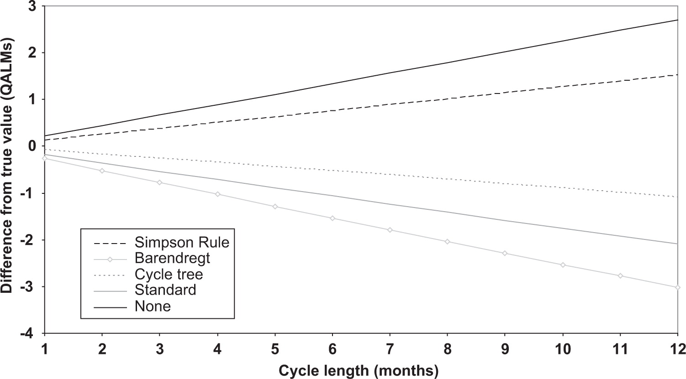

EPIB 676 session 5, McGill University
2024-09-12
Transition matrix (\(n_s \times n_s\), where \(n_s\) is the number of states)
\[ P = \begin{array}{c}\begin{matrix}Healthy & moderate & severe & dead \end{matrix} \\\left[\ \begin{matrix} p_{H \rightarrow H} & p_{H \rightarrow M} & p_{H \rightarrow S} & p_{H \rightarrow D}\\ p_{M \rightarrow H} & p_{M \rightarrow M} & p_{M \rightarrow S} & p_{M \rightarrow D}\\ p_{S \rightarrow H} & p_{S \rightarrow M} & p_{S \rightarrow S} & p_{S \rightarrow D}\\ p_{D \rightarrow H} & p_{D \rightarrow M} & p_{D \rightarrow S} & p_{D \rightarrow D} \end{matrix}\ \right] \end{array} \]
Initial distribution: \(m_0 = \begin{bmatrix} 2000 & 0 & 0 & 0 \end{bmatrix}\)
Cycle length: 1 year; Number of cycles: \(T=20\)
Matrix \(M\) stores cohort dist’n after each cycle
\(n_s\) columns and \(T+1\) rows
Row \(t\) contains \(m_t\), the cohort’s dist’n after cycle \(t\)
To calculate rewards (costs or QALYs)
Specify reward vectors \(c,q\) (state rewards only) or reward matrices \(C,Q\) (have transition rewards)
Store in reward matrices \(M_c, M_Q\).
Apply discount factor to row sums for net present cost/QALY
Time-varying transitions and rewards
Time-varying rewards
Correcting discrete time error
Capturing epidemiological outcomes
Differential equation models
Transition probabilities often depend on
simulation time: how long the model has been running
state residence time: how long someone has been in a state
Not allowed in a (pure) Markov model
Matrix solution only works for a pure Markov model
Over several years, cohort will die from “other causes” (not the disease modeled)
Prob. of other cause death changes with age
Usually approximated with country-specific life tables
Use column “Death probability between age X and X+1”
Use if some transitions differ by cycle
A “stack” of transition matrices, one for each cycle
\(P[i,j,t]\): transition prob. from state \(i\) to state \(j\) in cycle \(t\)
Dim 1: “From” health state \(1, ..., i, ... I\)
Dim 2: “To” health state \(1, ... , j, ... , J\)
Dim 3: during cycle \(1,\ldots,t,\ldots,T\)
Multiply all transitions by \((1 - P_{OCM})\) (age-specific probability of other cause mortality), then add \(P_{OCM}\) to the probability of transitioning to death.
For \(P_{i \rightarrow j}\) for all \(i,j \neq Death\):
\[ P_{i \rightarrow j}^{adjusted} = P_{i \rightarrow j}^{orig} (1 - P_{OCM}) \]
For \(P_{i \rightarrow D}\) for all \(i \neq Death\):
\[ P_{i \rightarrow D}^{adjusted} = P_{i \rightarrow D}^{orig} (1 - P_{OCM})+P_{OCM} \]
Without other cause mortality:
\[ \begin{array}{c}\begin{matrix}H & M & S & D \end{matrix} \\\left[\ \begin{matrix} 0.40 & 0.19 & 0.40 & 0.01\\ \end{matrix}\ \right] \end{array} \]
With \(P_{OCM}=0.03\):
\[ \begin{array}{c}\begin{matrix} H & M & S & D \end{matrix} \\\left[\ \begin{matrix} 0.40(0.97) & 0.19(0.97) & 0.40(0.97) & 0.01(0.97)+0.03\\ \end{matrix}\ \right] \end{array} \]
\[ \begin{bmatrix} 0.388 & 0.1843 & 0.388 & 0.0397\\ \end{bmatrix} \]
v_state_names <- c("H","M","S","D") #vector of state names
m_0 = matrix(c(2000, 0, 0, 0), nrow = 1, #initial dist
dimnames = list(c(""), v_state_names))
n_cycles = 20; p_HtoM = 0.2; p_MtoH = 0.4; p_MtoS = 0.4; p_MtoD = 0.01; p_StoH = 0.1; p_StoD = 0.3
mat_P = matrix(c(1-p_HtoM, p_HtoM, 0, 0,
p_MtoH, 1-p_MtoH-p_MtoS-p_MtoD, p_MtoS, p_MtoD,
p_StoH, 0, 1-p_StoH-p_StoD, p_StoD,
0, 0, 0, 1),
nrow = 4, byrow = T,
dimnames = list(v_state_names, v_state_names))
M = matrix(rep(0, 4*21), ncol=4,
dimnames = list(0:20, c("H","M","S","D")))
for (i in 1:21){
M[i,] <- m_0 %*% (mat_P %^% (i-1))
}
t_trace <- as_tibble(M) #convert from matrix
t_trace$Cycle_num <- 0:20 #add col for cycle number
t_trace <- t_trace |> #Long to wide
gather(key=State, value=Count, H:D) #wide to long formatCycle length is 1 year, cohort is age 50 at time 0.
# Pre-allocate 3D transition array
arr_P <- array(0,
dim=c(4, 4, 20),
dimnames=list(v_state_names, v_state_names, 1:20))
# Fill in array with transition matrix for each cycle
for(cycle in 1:20){
#. cohort age at start of this cycle
age = 50+cycle-1
#. get prob. other cause mortality from table
p_OCM <- t_other_cause_death[t_other_cause_death$Age==age,"prob_death"]
#. Adjust all probs DOWN to "make room" for OCM
mat_P_this_year = mat_P*(1-p_OCM)
#. Adjust prob. transitioning to death UP to account for OCM
mat_P_this_year[,"D"]<-mat_P_this_year[,"D"]+p_OCM
#. Put adjusted transition matrix into the transition array
arr_P[ , , cycle] <- mat_P_this_year
}, , 1
H M S D
H 0.797912 0.1994780 0.000000 0.0026100
M 0.398956 0.1895041 0.398956 0.0125839
S 0.099739 0.0000000 0.598434 0.3018270
D 0.000000 0.0000000 0.000000 1.0000000
, , 2
H M S D
H 0.797744 0.1994360 0.000000 0.0028200
M 0.398872 0.1894642 0.398872 0.0127918
S 0.099718 0.0000000 0.598308 0.3019740
D 0.000000 0.0000000 0.000000 1.0000000
, , 3
H M S D
H 0.797568 0.1993920 0.000000 0.0030400
M 0.398784 0.1894224 0.398784 0.0130096
S 0.099696 0.0000000 0.598176 0.3021280
D 0.000000 0.0000000 0.000000 1.0000000
, , 4
H M S D
H 0.79736 0.199340 0.00000 0.003300
M 0.39868 0.189373 0.39868 0.013267
S 0.09967 0.000000 0.59802 0.302310
D 0.00000 0.000000 0.00000 1.000000
, , 5
H M S D
H 0.797144 0.1992860 0.000000 0.0035700
M 0.398572 0.1893217 0.398572 0.0135343
S 0.099643 0.0000000 0.597858 0.3024990
D 0.000000 0.0000000 0.000000 1.0000000
, , 6
H M S D
H 0.796904 0.1992260 0.000000 0.0038700
M 0.398452 0.1892647 0.398452 0.0138313
S 0.099613 0.0000000 0.597678 0.3027090
D 0.000000 0.0000000 0.000000 1.0000000
, , 7
H M S D
H 0.796632 0.1991580 0.000000 0.0042100
M 0.398316 0.1892001 0.398316 0.0141679
S 0.099579 0.0000000 0.597474 0.3029470
D 0.000000 0.0000000 0.000000 1.0000000
, , 8
H M S D
H 0.796344 0.1990860 0.000000 0.0045700
M 0.398172 0.1891317 0.398172 0.0145243
S 0.099543 0.0000000 0.597258 0.3031990
D 0.000000 0.0000000 0.000000 1.0000000
, , 9
H M S D
H 0.796024 0.1990060 0.000000 0.0049700
M 0.398012 0.1890557 0.398012 0.0149203
S 0.099503 0.0000000 0.597018 0.3034790
D 0.000000 0.0000000 0.000000 1.0000000
, , 10
H M S D
H 0.795664 0.1989160 0.000000 0.0054200
M 0.397832 0.1889702 0.397832 0.0153658
S 0.099458 0.0000000 0.596748 0.3037940
D 0.000000 0.0000000 0.000000 1.0000000
, , 11
H M S D
H 0.795272 0.1988180 0.000000 0.0059100
M 0.397636 0.1888771 0.397636 0.0158509
S 0.099409 0.0000000 0.596454 0.3041370
D 0.000000 0.0000000 0.000000 1.0000000
, , 12
H M S D
H 0.794848 0.1987120 0.000000 0.0064400
M 0.397424 0.1887764 0.397424 0.0163756
S 0.099356 0.0000000 0.596136 0.3045080
D 0.000000 0.0000000 0.000000 1.0000000
, , 13
H M S D
H 0.794368 0.1985920 0.000000 0.0070400
M 0.397184 0.1886624 0.397184 0.0169696
S 0.099296 0.0000000 0.595776 0.3049280
D 0.000000 0.0000000 0.000000 1.0000000
, , 14
H M S D
H 0.793848 0.1984620 0.000000 0.0076900
M 0.396924 0.1885389 0.396924 0.0176131
S 0.099231 0.0000000 0.595386 0.3053830
D 0.000000 0.0000000 0.000000 1.0000000
, , 15
H M S D
H 0.793264 0.1983160 0.000000 0.0084200
M 0.396632 0.1884002 0.396632 0.0183358
S 0.099158 0.0000000 0.594948 0.3058940
D 0.000000 0.0000000 0.000000 1.0000000
, , 16
H M S D
H 0.792624 0.1981560 0.000000 0.0092200
M 0.396312 0.1882482 0.396312 0.0191278
S 0.099078 0.0000000 0.594468 0.3064540
D 0.000000 0.0000000 0.000000 1.0000000
, , 17
H M S D
H 0.791912 0.1979780 0.000000 0.0101100
M 0.395956 0.1880791 0.395956 0.0200089
S 0.098989 0.0000000 0.593934 0.3070770
D 0.000000 0.0000000 0.000000 1.0000000
, , 18
H M S D
H 0.79112 0.197780 0.00000 0.011100
M 0.39556 0.187891 0.39556 0.020989
S 0.09889 0.000000 0.59334 0.307770
D 0.00000 0.000000 0.00000 1.000000
, , 19
H M S D
H 0.79024 0.197560 0.00000 0.012200
M 0.39512 0.187682 0.39512 0.022078
S 0.09878 0.000000 0.59268 0.308540
D 0.00000 0.000000 0.00000 1.000000
, , 20
H M S D
H 0.789272 0.1973180 0.000000 0.0134100
M 0.394636 0.1874521 0.394636 0.0232759
S 0.098659 0.0000000 0.591954 0.3093870
D 0.000000 0.0000000 0.000000 1.0000000#Verify that for each cycle, rows of transition matrix sum to 1
for (cycle in 1:20){
print(rowSums(arr_P[ , , cycle])) }H M S D
1 1 1 1
H M S D
1 1 1 1
H M S D
1 1 1 1
H M S D
1 1 1 1
H M S D
1 1 1 1
H M S D
1 1 1 1
H M S D
1 1 1 1
H M S D
1 1 1 1
H M S D
1 1 1 1
H M S D
1 1 1 1
H M S D
1 1 1 1
H M S D
1 1 1 1
H M S D
1 1 1 1
H M S D
1 1 1 1
H M S D
1 1 1 1
H M S D
1 1 1 1
H M S D
1 1 1 1
H M S D
1 1 1 1
H M S D
1 1 1 1
H M S D
1 1 1 1 M_OCM = matrix(0, ncol=4, nrow = 21,
dimnames = list(paste0("t",0:20), c("H","M","S","D")))
M_OCM[1,] <- m_0 #save initial distribution of cohort
for (i in 1:20){ #calculate distribution after each cycle
M_OCM[i+1,] <- M_OCM[i,] %*% arr_P[ , , i]
}
M_OCM H M S D
t0 2000.0000 0.0000 0.0000 0.00000
t1 1595.8240 398.9560 0.0000 5.22000
t2 1432.1914 393.8526 159.1324 14.82359
t3 1315.1970 360.1720 252.2513 72.37966
t4 1217.4208 330.3782 294.4447 157.75631
t5 1131.4785 305.1627 307.7156 255.64316
t6 1053.9249 283.1765 305.5075 357.39107
t7 982.8062 263.4746 295.3265 458.39271
t8 916.9577 245.4943 281.2943 556.25362
t9 855.6197 228.8922 265.6475 649.84068
t10 798.2672 213.4502 249.5852 738.69736
t11 744.5260 199.0257 233.7416 822.70660
t12 694.1063 185.5176 218.4394 901.93671
t13 646.7506 172.8442 203.8256 976.57966
t14 602.2535 160.9433 189.9609 1046.84236
t15 560.4174 149.7582 176.8521 1112.97226
t16 521.0734 139.2418 164.4839 1175.20089
t17 484.0600 129.3495 152.8262 1233.76424
t18 449.2280 120.0410 141.8434 1288.88754
t19 416.4399 111.2790 131.4984 1340.78275
t20 385.5725 103.0306 121.7557 1389.64121Time-varying transitions and rewards
Time-varying rewards
Correcting discrete time error
Capturing epidemiological outcomes
Differential equation models
\[ \textbf{C}= \begin{bmatrix} c_H & c_M+c_{H \rightarrow M} & c_S+c_{H \rightarrow S} & c_D+c_{H \rightarrow D}\\ c_H+c_{M \rightarrow H} & c_M & c_S+c_{M \rightarrow S} & c_D+c_{M \rightarrow D}\\ c_H+c_{S \rightarrow H} & c_M+c_{S \rightarrow M} & c_S & c_D+c_{S \rightarrow D}\\ c_H+c_{D \rightarrow H} & c_M+c_{D \rightarrow M} & c_S+c_{D \rightarrow S} & c_D \end{bmatrix},\\ \textbf{Q} = \begin{bmatrix} q_H & q_M+q_{H \rightarrow M} & q_S+q_{H \rightarrow S} & q_D+q_{H \rightarrow D}\\ q_H+q_{M \rightarrow H} & q_M & q_S+q_{M \rightarrow S} & q_D+q_{M \rightarrow D}\\ q_H+q_{S \rightarrow H} & q_M+q_{S \rightarrow M} & q_S & q_D+q_{S \rightarrow D}\\ q_H+q_{D \rightarrow H} & q_M+q_{D \rightarrow M} & q_S+q_{D \rightarrow S} & q_D \end{bmatrix} \]
Reward matrix assumes costs/QALYs don’t depend on cycle number
Can use 3D array to assign different rewards by cycle
\(\textbf{C}[i,j,t]\) and \(\textbf{Q}[i,j,t]\) contain rewards (state + transition) for person going from \(i\) to \(j\) in cycle \(t\)
Can compute total rewards of people who end cycle \(t\) in each state:
\(\hat{C}_t =m_{t-1} (P \bigodot C[:,:,t])\)
\(\hat{Q}_t = m_{t-1} (P \bigodot Q[:,:,t])\)
If you don’t like 3D arrays, instead generate cycle-specific 2D matrices within your for loop
#Pseudocode, won't run without modifications
mat_M <- matrix(0, ncol=4, nrow = n_cycles+1,
dimnames = list(0:n_cycles, c("H","M","S","D")))
v_costs_per_cycle <- matrix(0, nrow = ncycles, ncol=1)
v_QALYs_per_cycle <- matrix(0, nrow = ncycles, ncol=1)
mat_M[1, ] <- m_0 # initial distribution
for(i in 1:n_cycles){
mat_P_cycle <- NA # Calculate transition matrix for this cycle
mat_C_cycle <- NA # Calculate cost reward matrix for this cycle
mat_Q_cycle <- NA # Calculate QALY reward matrix for this cycle
M[i+1,] <- M[i,] %*% mat_T_cycle #update cohort distribution
v_costs_per_cycle[i] <- sum(M[i+1,] %*% mat_C_cycle) #calculate costs
v_QALYs_per_cycle[i] <- sum(M[i+1,] %*% mat_Q_cycle) #calculate QALYs
}Time-varying transitions and rewards
Time-varying rewards
Correcting discrete time error
Capturing epidemiological outcomes
Differential equation models
In uncorrected models, transitions occur at cycle end
In real life, transitions occur in continuous time
Transition probs. are cumulative probability of transitioning during a cycle
As cycle length \(\rightarrow\) 0, discretization error \(\rightarrow\) 0.
But, more cycles means more compute needed, and may lead to less interpretable probabilities
Modelers usually use another fix
Numerical process to approximate integrating a curve
Simpson’s 1/3rd method (quadratic approximation; requires even number of cycles):
Multiply reward by 1/3 for first and last cycle
In between, multiply by 4/3 for odd cycles and 2/3 for even
Simpson’s 3/8 method (cubic approximation; requires that number of cycles are multiple of 3):
Multiply reward by 3/8 in first and last cycle
In between, multiply by 6/8 if mult. of 3 and 9/8 otherwise
Intuition: If individuals make transitions halfway through a cycle on average, they should incur half the cost (QALY) associated with their “from” state and half the cost (QALY) of their “to” state
Can be implemented similarly to transition rewards in a reward matrix
\(\hat{C}_t =m_{t-1} (P \bigodot C)\) or \(\hat{Q}_t =m_{t-1} (P \bigodot Q)\) with C and Q as given on next slide
\[ \textbf{C}= \begin{bmatrix} c_H & .5c_H+.5c_M & .5c_H+.5c_S & .5c_H+.5c_D\\ .5c_M+.5c_H & c_M & .5c_M+.5c_S & .5c_M+.5c_D\\ .5c_S+.5c_H & .5c_S+.5c_M & c_S & .5c_S+.5c_D\\ .5c_D+.5c_H & .5c_D+.5c_M & .5c_D+.5c_S & c_D \end{bmatrix},\\ \textbf{Q} = \begin{bmatrix} q_H & .5q_H+.5q_M & .5q_H+.5q_S & .5q_H+.5q_D\\ .5q_M+.5q_H & q_M & .5q_M+.5q_S & .5q_M+.5q_D\\ .5q_S+.5q_H & .5q_S+.5q_M & q_S & .5q_S+.5q_D\\ .5q_D+.5q_H & .5q_D+.5q_M & .5q_D+.5q_S & q_D \end{bmatrix} \]
Simpson rule and cycle tree method both good. I find cycle tree method intuitive (and it doesn’t matter if total number of cycles are a multiple of 2 or 3)
Time-varying transitions and rewards
Time-varying rewards
Correcting discrete time error
Capturing epidemiological outcomes
Differential equation models
Measure of intervention effectiveness
Of interest to decision makers
Can used to calibrate or validate your model (more later)
Examples: survival, prevalence, incidence, lifetime risk
Number of people not dead at time \(t\)
For each cycle, sum all states (columns of \(M\) matrix) except dead
Expected number of years before death. Integral of survival:
\[ LE = \int_{t=0}^\infty S(t) \]
In model with discrete time, calculate as:
\[ LE = \Sigma_{t=0}^\infty S(t) \]
Expected age at death = remaining life expectancy + cohorts age at \(t=0\).
Proportion of population alive in a health state at a specific time.
Calculated as ratio of number in state i over number in any state other than dead
If multiple model states correspond to health state (e.g., tunnel states), must add them together for the numerator
Proportion of population entering health state at \(t\)
For a state \(j\):
\(m_{t-1} P[:,j]\) is the number entering or staying in state \(j\) in cycle \(t\)
\(m_{t-1} P[j,j]\) is the number staying in state \(j\) in cycle \(t\)
\(m_{t-1} P[:,j] - m_{t-1} P[j,j]\) is the number entering state \(j\) in cycle \(t\)
Divide by number alive at time \(t\) to make it a proportion
Time-varying transitions and rewards
Time-varying rewards
Correcting discrete time error
Capturing epidemiological outcomes
Differential equation models
Most common method for continuous time cohort modeling
Transitions depend on how cohort distributed across states (compartments)
Very useful for modeling epidemics
Often approximated with difference equations
Similarities to discrete time CSTMs
Individual in one state (compartment) at a time
Individuals in state treated identically
Transition between states over time
Differences from discrete time CSTMs
Continuous time (unless using difference eqn approximation)
Transition rates can depend how population cohort is distributed across states in that instant
Three states: Susceptible, Infectious, Removed (recovered or dead)
Infection rate \(\beta\) governs S \(\rightarrow\) I
Removal rate \(\mu\) governs S \(\rightarrow\) R
\[ \begin{aligned} &\frac{dS}{dt}= -\beta S I\\ &\frac{dI}{dt} = \beta S I - \mu I\\ &\frac{dR}{dt} = \mu I \end{aligned} \]
\[ \begin{aligned} &S(t+m) = S(t) + \int_t^m -\beta S I dt\\ &I(t+m) = I(t) + \int_t^m (\beta S I - \mu I)dt\\ &R(t+m) = R(t) + \int_t^m \mu I dt \end{aligned} \]
\[ \begin{aligned} &S(t+m) = S(t) + \int_t^m -\beta S I dt\\ &I(t+m) = I(t) + \int_t^m (\beta S I - \mu I)dt\\ &R(t+m) = R(t) + \int_t^m \mu I dt \end{aligned} \]
\[ \begin{aligned} &S_t = S_{t-1} -\beta^* S_{t-1} I_{t_1}\\ \\ &I_t = I_{t-1} + \beta^* S_{t-1} I_{t-1} - \mu^* I_{t-1}\\ \\ &R_t = R_{t-1} + \mu^* I_{t-1} \end{aligned} \]
\(\beta^*\) and \(\mu^*\) are discrete analogs for \(\beta\) and \(\mu\) and their value depends on the cycle length.
While (Semi)Markov models usually closed, differential eqn models can be open
People enter (born, age in, get condition) and leave (die, age out)
Cohort size not conserved for open cohorts
In (Semi-)Markov models, usually build separate models to capture age cohorts
For differential eqn model, may need to put age groups in same model for proper transition dynamics
If transitions or rewards are time-varying, can create 3D arrays and select “slice” for each cycle in a loop
Cycle tree method corrects discrete time error using a modified transition reward matrix
Epidemiological measures can be calculated from a cohort model
Differential (difference) equation models useful when distribution of population across states influences transitions (e.g., infectious diseases)